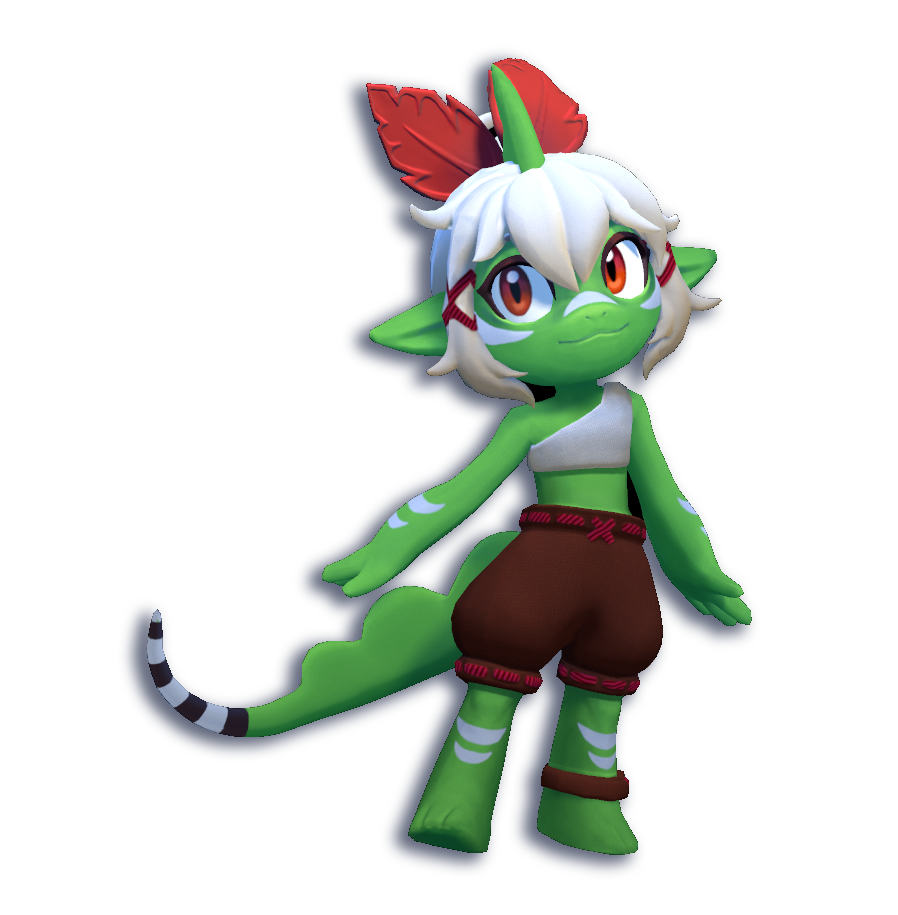
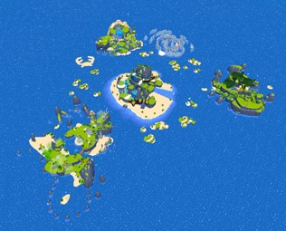
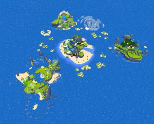

Overview
Basil and the Isles of Spice is an open world 3D platformer. Our 19 person team created a world where the player can explore various islands to collect crystals. Play as Basil, the water-running lizard, and explore four uniquely themed islands. Can you reach the top of the caldera to complete your training?
Download: Basil and the Isles of Spice
Level Design Overview
 

Level Design - Tutorial